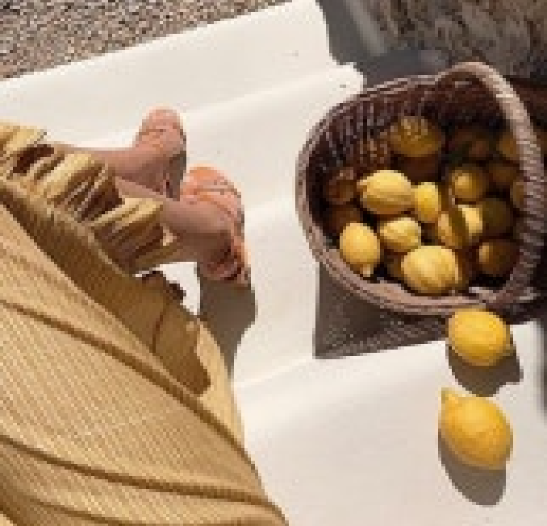
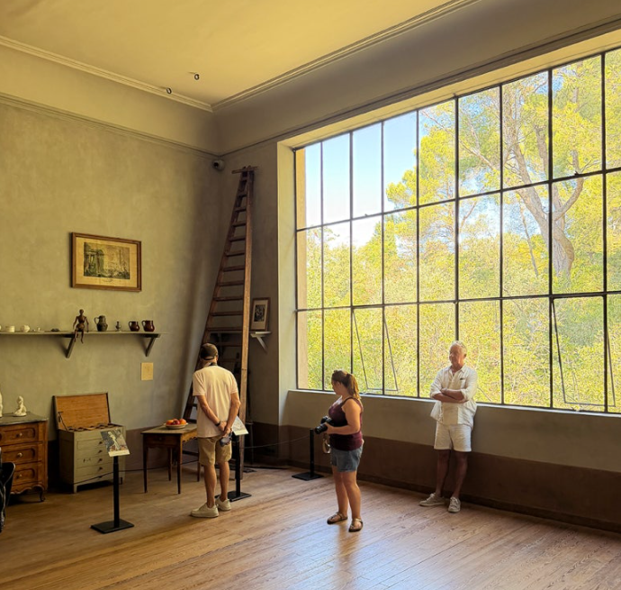

로그아웃 상태입니다.
로그인하여 이웃새글을 확인해보세요.
-
블라블라-

핑크파르페 23시간 전 프랑스 세잔의 도시 엑상 프로방스 여행기 (세잔아뜰리에) / 소화, 붓기, 혈당을 한 번에 해결하는 베리요거트 & 바나나킥맛 <푸푸엔자임> 미리보기
프랑스 세잔의 도시 엑상 프로방스 여행기 (세잔아뜰리에) / 소화, 붓기, 혈당을 한 번에 해결하는 베리요거트 & 바나나킥맛 <푸푸엔자임> 미리보기
오늘은 아비뇽에서 엑상프로방스로 갑니다. 아비뇽에서 기차를 타고 20분만가면 엑상프로방스에 갈 수 있어요 남프랑스는 뚜벅이로 다니기는 어려운데 아비뇽과 엑상프로방스는 렌트안해도 기차여행으로도 충분히 가능해요 ( 기차역에서 시내까지는 우버로 해결 ) 우버를 타고 기차역으로 가서 출발- 엑상프로방스에 도착하자마자 호텔에 체크인을 했는데요 직원이 한국어를 하는거예요
공감 83 댓글 14
-
대왕칫솔 추천 투씨 (TOOTHIEE) 빅스마일 빅헤드 칫솔 45mm로 빠르게 양치하는 법쭌쓰 2026. 9. 3
투씨 TOOTHIEE 빅스마일 빅헤드 칫솔은 45mm의 거대한 헤드로 치아 4~5개를 한 번에 감싸 안아 바쁜 아침 양치 시간을 절반으로 줄여주는 프리미엄 구강 관리템입니다. 1세트에 넉넉하게 12개가 들어있어 잦은 교체에도 비용 부담이 없으며, 인제공학적 이중 그립 덕분에 미끄러짐 없이 완벽한 양치가 가능합니다.
공감 29 댓글 9